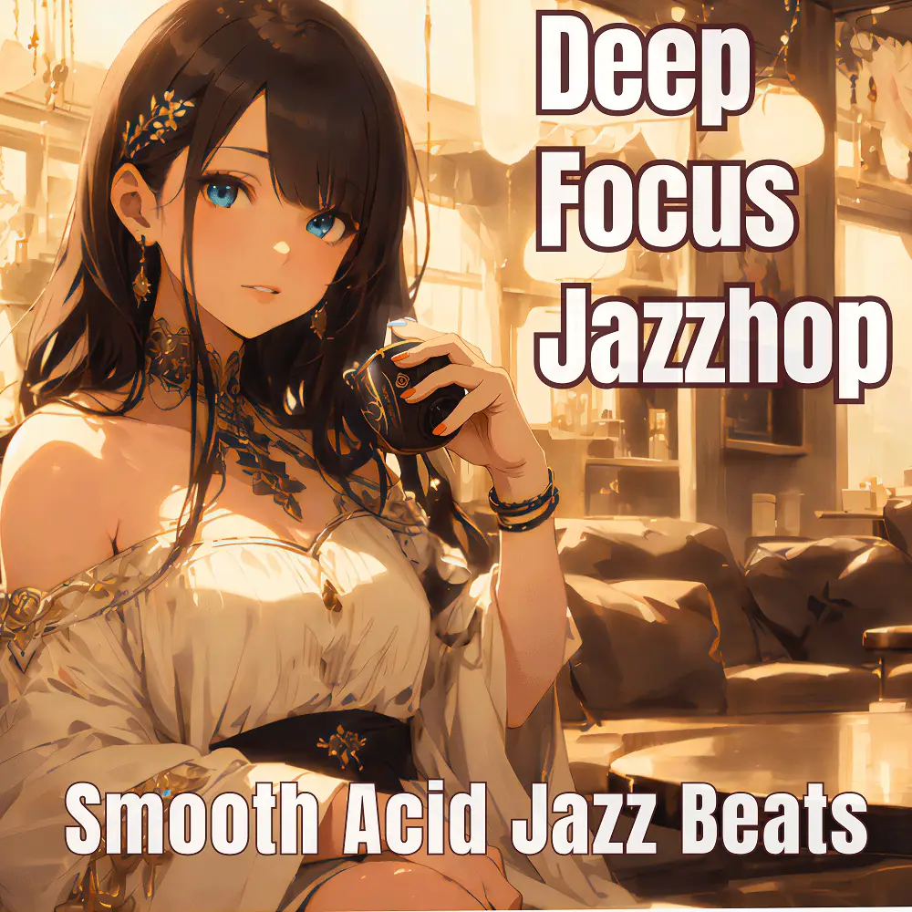

Jazzhop · Acid Jazz · Lo-Fi
Deep Focus Jazzhop:Smooth Acid Jazz Beats
Nanashino-chan
Nanashino-chanの「Deep Focus Jazzhop:Smooth Acid Jazz Beats」。Jazzhop / Acid Jazz / Lo-Fiを楽しめる全25曲のインストゥルメンタル作品です。「Midnight Serenade / Echoes in the Rain」などを収録。気になる曲を試聴して、配信サービスでお気に入りを見つけてください。
2025-04-26 リリース · 25 曲 · Instrumental
アルバムを試聴
気になる音楽を、ここから。
曲を選ぶまでジャケットを表示します。試聴にはYouTubeを使用します。
YOUTUBE PREVIEW
試聴する曲を選んでください
曲を選ぶまでジャケットを表示します。試聴にはYouTubeを使用します。
再生できない場合は、配信サービスでアルバムや曲を開いてください。
配信サービスでアルバムを探す
「検索」のリンクは検索結果を開きます。サービス内でアルバムや曲を選択してください。
収録曲一覧 25
- 01Midnight Serenade
- 02Echoes in the Rain
- 03Velvet Breeze
- 04Tranquil Vibes
- 05Moonlit Groove
- 06Urban Jazz Flow
- 07Calm Currents
- 08Gentle Waves
- 09Subtle Harmony
- 10Smooth Transitions
- 11Cool Reflections
- 12Hidden Riffs
- 13Chill Essence
- 14Late Night Conversations
- 15Dreamy Melodies
- 16Nostalgic Echoes
- 17Rhythmic Shades
- 18Jazzy Hues
- 19Soft Focus
- 20Urban Sunset
- 21Mellow Drift
- 22Evening Glow
- 23Soothing Waves
- 24Serene Reflections
- 25Twilight Groove
SNSで使いたい音源を探す
「Nanashino-chan ＋ 曲名」をコピーして、SNSアプリの音源検索に貼り付けてください。音源の表示は地域やアカウントにより異なります。コピー機能は利用許諾を付与するものではありません。